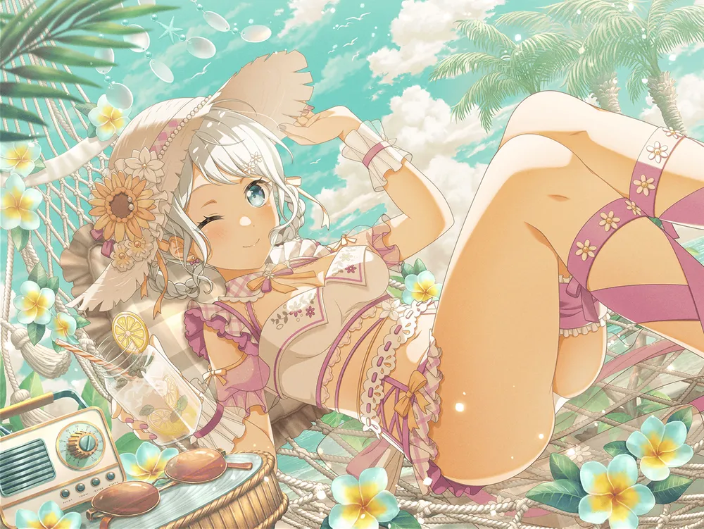
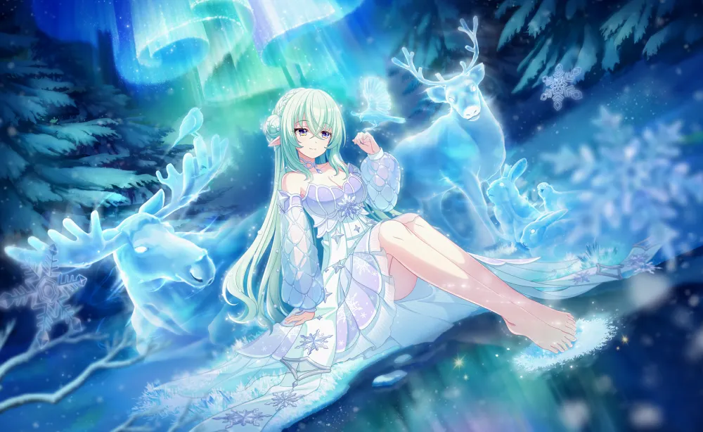

· 와카미야 이브 from BanG Dream! Girls Band Party!

원픽 카드 보기 [ 펼치기 · 접기 ]

· 리리야 쿠르트베이 from World Dai Star: Yume no Stellarium

원픽 카드 보기 [ 펼치기 · 접기 ]

· 유자키 츠카사 from FLY ME TO THE MOON

· 나나쿠라 린 from Giji Harem

· 요자쿠라 무츠미 from Mission: Yozakura Family